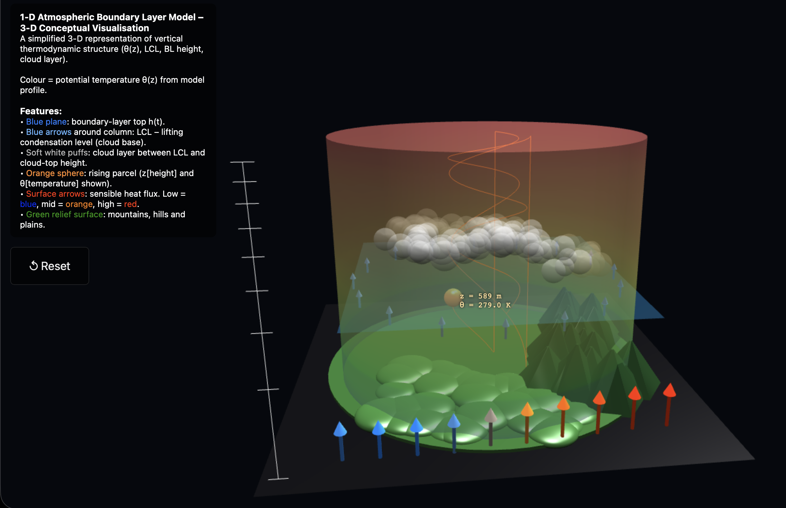

MTH3035 · Mathematics Group Project
A Single-Column Model for the Numerical Modelling of the Atmospheric Boundary Layer
Group 7A

Screenshot from the interactive ABL visualisation
Overview
Motivation and Project aims
Why this matters
- Morning ABL transition is difficult to model.
- Controls pollution, turbulence & heat exchange.
- Driven strongly by stability & wind shear.
- Essential for weather & climate modelling.
What we set out to do
- Validate the 1DBL model.
- Evaluate sensitivity to early-morning stability.
- Evaluate sensitivity to geostrophic wind.
Physical Background
Morning growth of the convective boundary layer (CBL)
Morning CBL Growth
- Overnight, a stable boundary layer (SBL) forms due to radiative cooling.
- After sunrise, surface heating erodes the SBL and the CBL grows.
- Transition is sensitive to early-morning temperature structure.
- Goal: capture ABL growth and its dependence on initial stratification and wind.
Mathematical Model
1D column model for potential temperature
$$\frac{\partial \theta}{\partial t}
= -\frac{\partial}{\partial z}\bigl(w'\theta'\bigr), \qquad
w'\theta' = -K_h\,\frac{\partial \theta}{\partial z}$$
Advection–Diffusion Framework
The 1D model evolves the potential temperature profile θ(z,t) via:
- Kₕ(z,t) – eddy diffusivity (stability + wind shear dependent).
- Represents unresolved turbulent transport.
- Surface heat flux provides the buoyancy source.
Computational Method
Software Structure
Results I – Temperature Profile
Potential temperature profiles through the morning
- The model captures the morning inversion around 200–300 m.
- Potential temperature in the mixed layer shows good agreement with observations
- Near-surface temperatures differ, suggesting weaker early-morning mixing
- Observed wind shows strong shear and nocturnal-jet remnants, whereas the model wind is uniform.
Results II – Sensitivity Experiments
- Stronger early-morning stability delays CBL growth and keeps the inversion stronger for longer.
- Weaker stability produces faster erosion of the nocturnal layer and deeper CBLs.
- Wind sensitivity shows enhanced mixing at higher Vg, but the effect is secondary to stability changes.
- Model behaviour matches theoretical expectations and supports its validity for morning-transition studies.
Interpretation
How do our results compare to literature and expectations?
- The model captures expected morning CBL growth behaviour.
- Weak stability → rapid deepening; strong stability → delayed mixing.
- Stability dominates morning CBL evolution; wind plays secondary role.
- Results align with analytical scaling laws and typical observational studies.
Conclusions
Key takeaways from the 1D boundary-layer experiments
- Model reproduces the main mechanisms of the morning CBL transition.
- Sensitivity tests confirm theory: stability dominates, wind plays a secondary role.
- Remaining biases indicate opportunities for improving turbulence and surface-flux parameterisations.
Limitations
What our model does not capture (yet)
- 1D framework: no horizontal variability, advection, or mesoscale flows.
- Simple turbulence closure: first-order K-theory cannot capture non-local plumes or entrainment bursts.
- Idealised forcing: prescribed surface heat flux and wind fields limit realism.
- No moisture, radiation, or cloud feedbacks → missing key ABL processes.
- Inversion sharpness depends on vertical resolution and diffusion scheme.
Thank you
MTH3035 Mathematics Group Project
↔︎
Use ← and → to move between slides